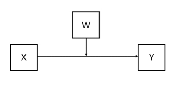
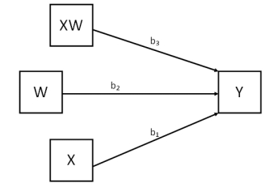

本文档包含用于检验中介、调节和有调节的中介模型的 Mplus 代码，包括与 Andrew Hayes 在其 SPSS PROCESS 插件中列出的模型，
但是我们不会在教程中写全部的process模型， 因为当你理解的原理， 你将有能力自己写出任意process模型。
建议您在进行此类分析之前阅读他的开创性著作（Hayes, A. F. (2013, 2017)。《中介、调节和条件过程分析简介：基于回归的方法》， 纽约：吉尔福德出版社。
为什么使用MPLUS
Mplus学习曲线比较陡，入门困难， 但是为什么要使用mplus， 我觉得有如下理由：
- Mplus 提供了一个完全灵活的建模环境，能够检验无限种类的调节和中介模型，而不仅仅是 PROCESS 模型。
- 虽然Process插件使用比较简单， 但是它把研究者限定到有限的模型中， 使得你想要使用这个插件， 你必须先去找到适用的模型， 如果没有找到，你的研究就停滞不前了
- Mplus 可以有多个自变量和中介变量， 但是process实际上只提供了一个自变量， 如果想要设置多个自变量， 是比较麻烦的事情
- mplus 支持潜变量
本教程重要内容
- 我们首先提供集中常见的模型， 并使用mplus检验这个模型
- 我们会对代码进行注释，帮助你理解代码
- 我们会提供一种思路，可以帮助你实现任意模型，不仅仅限于process插件模型
具体模型举例
SPSS Process Model 1 最简单的调节模型
Process 中最简单的调节效应模型就是 model 1， 如图所示：
概念图：

统计图：

上面那个图叫做概念图， 下面的图叫做统计模型图， 两图虽然都可以表示变量之间的关系，
但是统计模型图更直观的给出了模型的公式， 根据上面的统计图， 我们可以列出模型的方程：
1 | Y = b0 + b1X + b2W + b3XW |
将上述方程提取公因式，得到下面的方程：
1 | Y = (b0 + b2W) + (b1 + b3W)X |
从方程中， 我们之所以说W是调节变量， 就是因为 X 的回归系数b1 + b3W中包含了W， 即W可以改变了X对Y的影响力。
假如W越大， b1 + b3W的绝对值越大， 那么说明W是增强了X对Y的效应， 这时候W具有增强作用；
反之， W具有削弱X和Y之间效应的作用。
这个案例目的就是介绍， 在 Process中 ，调节效应的本质就是 自变量 和调节变量乘积项的回归系数。
在mplus中， 我们延用process的概念， 但是mplus没有使用最小二乘法的回归分析， 所以我们叫路径系数， 而不是回归系数。
在Mplus中如何分析这个模型：
1 | ！注意代码中省略了DATA命令，你需要自行设定数据 |
（未完待续）